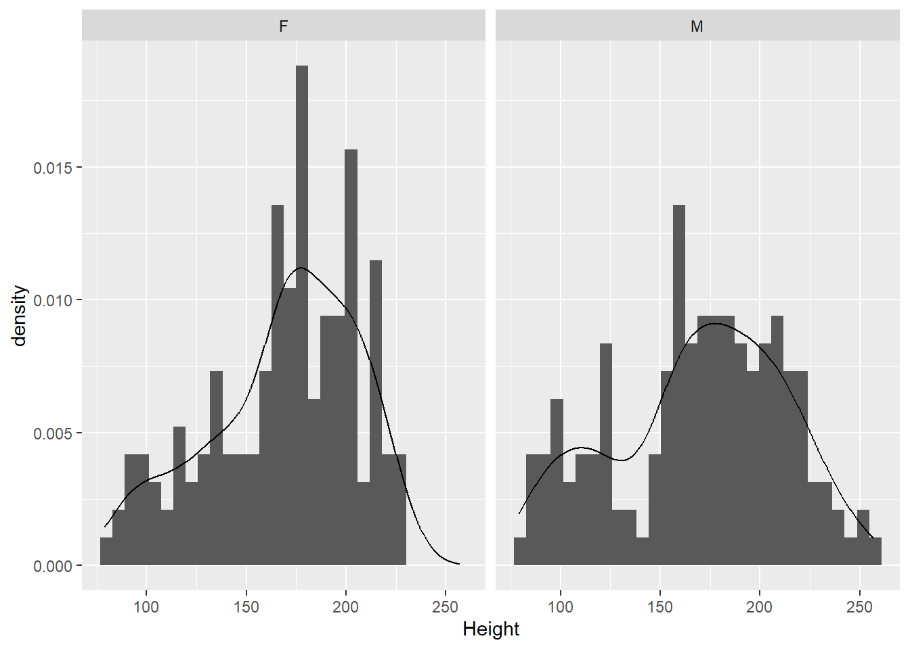
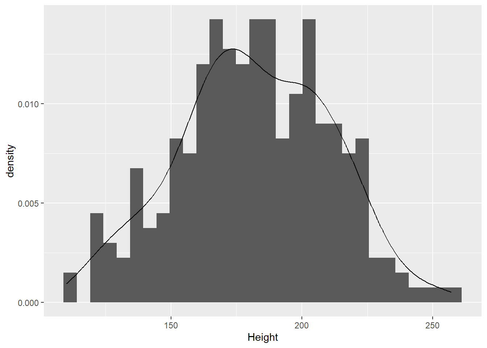

Code
library(tidyverse)library(tidyverse)Load a dataset on elephants.
ele <- read_table(
"https://www.massey.ac.nz/~anhsmith/data/elephant.txt"
) |>
rename("Height" = `Shoulder.height`) # renames the variable
str(ele)spc_tbl_ [312 × 3] (S3: spec_tbl_df/tbl_df/tbl/data.frame)
$ Sex : chr [1:312] "F" "F" "F" "F" ...
$ Age : num [1:312] 0 0 0 0 0 0 0 0 1 1 ...
$ Height: num [1:312] 79 83 86 90 91 93 96 102 94 96 ...
- attr(*, "spec")=
.. cols(
.. Sex = col_character(),
.. Age = col_double(),
.. Shoulder.height = col_double()
.. )There are three variables:
Sex: M or FAge: in yearsHeight: shoulder height in cmExamine the distribution of the heights.
ggplot(ele) +
aes(x = Height) +
geom_histogram(
aes(y = after_stat(density)) # this aes goes here because
# it only applies to geom_histogram
) +
geom_density()
Does that look normally distributed to you? Is it symmetrical and bell-shaped?
We can test whether these data conform to a normal distribution model with a Shipiro-Wilk test for normality. The null hypothesis is that the data came from a population that is normal.
shapiro.test(ele$Height)
Shapiro-Wilk normality test
data: ele$Height
W = 0.96785, p-value = 2.043e-06The very low p-value says that we can reject the null hypothesis, and conclude that these data are very unlikely to have come from a normal distribution.
The data have both male and female elephants, so we should probably look at the sexes separately.
ggplot(ele) +
aes(x = Height) +
geom_histogram(
aes(y = after_stat(density)) # this aes goes here because
# it only applies to geom_histogram
) +
geom_density() +
facet_grid( ~ Sex)
ggplot(ele) +
aes(x = Height, fill = Sex, colour = Sex) +
geom_density(alpha = .3)
It doesn’t look like there’s a major difference between the sexes in terms of the distribution of heights. Males might be a bit more variable than females (seeing the thicker tails).
Have a look at the values of age.
ggplot(ele) + aes(Age) + geom_bar()
There is a wide range of ages, from 0 to 15 years old. Many elephants (49, to be exact) are 0 or 1 year old. Are the data normal if we remove these? We’ll first make a new copy of the data with the baby elephants removed and then repeat our tests for normality.
ele2 <- ele |> filter(Age > 1) # make new dataset with babies removed
ggplot(ele2) +
aes(x = Height) +
geom_histogram(
aes(y = after_stat(density))
) +
geom_density() 
That looks a bit more normal.
shapiro.test(ele2$Height)
Shapiro-Wilk normality test
data: ele2$Height
W = 0.99394, p-value = 0.3726Of elephants 2 years or older, there is no evidence that the heights do not come from a normal distribution (W = 1.0, p = 0.37). So, the heights of non-baby elephants appear approximately normally distributed.
Let’s now estimate the population mean (with a 95% confidence interval) of Heights in the dataset with the baby elephants removed.
t.test(ele2$Height)
One Sample t-test
data: ele2$Height
t = 101.24, df = 262, p-value < 2.2e-16
alternative hypothesis: true mean is not equal to 0
95 percent confidence interval:
178.0425 185.1058
sample estimates:
mean of x
181.5741 The t.test() function is very flexible. When given a single sample, it will provide the mean and 95% confidence interval. How would you interpret this confidence interval?
It also provides a test of whether the mean of the sample is significantly different from zero. If the p-value is less than 0.05, then we can say that there is evidence against the null hypothesis of a mean of zero. Now, in this case, of course this isn’t useful. Elephants can never have zero or negative height, so a mean height of zero is nonsensical.
Note that we can extract the estimate of the population mean and its confidence interval in the following way.
t.test(ele2$Height)$estimatemean of x
181.5741 t.test(ele2$Height)$conf.int[1] 178.0425 185.1058
attr(,"conf.level")
[1] 0.95How was this confidence interval calculated?
The standard error (the standard deviation over multiple samples) for a sample mean can be estimated by \(s / \sqrt n\), where \(s\) is the sample standard deviation and \(n\) is the sample size.
n = length(ele2$Height)
s = sd(ele2$Height)
( se = s / sqrt(n) )[1] 1.793566Once you have estimated the standard error, a confidence interval for a sample mean \(\bar x\) is simply
\[ \bar x \pm t \times \text{se} \]
The \(t\) value is the 0.975 quantile of the \(t\) distribution with the degrees of freedom given by \(n-1\).
qt(p = 0.975, df = n - 1)[1] 1.96906So, the sample mean and confidence interval is:
( xbar <- mean(ele2$Height) )[1] 181.5741( xbar - qt(p = 0.975, df = n - 1) * se )[1] 178.0425( xbar + qt(p = 0.975, df = n - 1) * se )[1] 185.1058Let’s say we are interested in testing whether the mean heights of male and female elephants are different. First, we can test for differences in the variances in the two sexes using Levene’s test, which is an important assumption of the t-test. In other words, if the assumption is violated, the results of the test may be misleading.
Let’s do the Levene’s test.
car::leveneTest(Height ~ Sex, data = ele2)Levene's Test for Homogeneity of Variance (center = median)
Df F value Pr(>F)
group 1 2.6478 0.1049
261 A p-value of 0.1 is not huge, but it’s not enough evidence to reject the null hypothesis that the variance of male heights is equal to the variance of female heights (at the 5% level).
The default option for a t-test using the t.test() function is to not assume equal variances.
t.test(formula = Height ~ Sex, data = ele2)
Welch Two Sample t-test
data: Height by Sex
t = -1.3991, df = 251.38, p-value = 0.163
alternative hypothesis: true difference in means between group F and group M is not equal to 0
95 percent confidence interval:
-12.111371 2.050723
sample estimates:
mean in group F mean in group M
179.1259 184.1562 By this test, there is no strong evidence against the null hypothesis that the mean heights of male and female elephants are equal.
Welch Test does not assume equal variances. If we wanted to make this assumption (and therefore get more power):
t.test(formula = Height ~ Sex, var.equal = T, data = ele2)
Two Sample t-test
data: Height by Sex
t = -1.4044, df = 261, p-value = 0.1614
alternative hypothesis: true difference in means between group F and group M is not equal to 0
95 percent confidence interval:
-12.083154 2.022506
sample estimates:
mean in group F mean in group M
179.1259 184.1562 The result is essentially the same in this case.
PrestigeWe will again be using a well-known dataset called Prestige from the car R package. This dataset deals with prestige ratings of Canadian Occupations. The Prestige dataset has 102 rows and 6 columns. The observations are occupations.
This data frame contains the following columns:
education - Average education of occupational incumbents, years, in 1971.
income - Average income of incumbents, dollars, in 1971.
women - Percentage of incumbents who are women.
prestige - Pineo-Porter prestige score for occupation, from a social survey conducted in the mid-1960s.
census - Canadian Census occupational code.
type - Type of occupation. A factor with levels: bc, Blue Collar; prof, Professional, Managerial, and Technical; wc, White Collar. (includes four missing values).
Perform a one-sample t-test to test the hypothesis that the true mean prestige is exactly 50.
library(tidyverse)
library(car)
data(Prestige)
# Alternative hyp: greater or less than 50
t.test(Prestige$prestige, mu=50)
# Alternative hyp: greater than 50
t.test(Prestige$prestige, mu=50, alternative="greater")Test whether the true mean prestige score for professionals is 50% more than the true mean prestige score for white collar occupations.
prof.data <- Prestige |>
filter(type=="prof") |>
pull(prestige)
wc.data <- Prestige |>
filter(type=="wc") |>
pull(prestige)
t.test(prof.data,
wc.data,
mu = 0.5 * mean(wc.data),
alternative = 'greater')Explore the skewness in the income variable using a boxplot.
Prestige |>
ggplot() +
aes(income) +
geom_boxplot() # or
boxplot(Prestige$income, horizontal = TRUE)Find a suitable power transformation to correct the skewness.
library(lindia)
gg_boxcox(lm(income ~ 1, data = Prestige))Compute the 95% confidence interval for the true mean income using the raw and log-transformed data.
t.test(Prestige$income)
t.test(log(Prestige$income))More R code examples are here